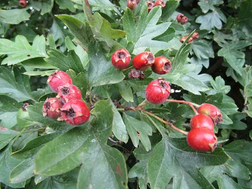

Wild fruit · Mar–May
Hawthorn
Crataegus monogyna
Also called Hawthorn
Hawthorn is a wild fruit you can forage from March to May in Canterbury, Otago and Southland and Top of the South. Thorny hedge tree with lobed leaves and dark red haws.

Caution. Don't eat the seeds.
When is hawthorn in season in New Zealand?
Hawthorn is usually in season March to May. Timing shifts with weather, latitude and altitude.
Where does hawthorn grow in New Zealand?
Hawthorn grows in Canterbury, Marlborough, Nelson, Otago, Southland, Tasman. Regions: Canterbury, Otago and Southland, Top of the South.
How do you recognise hawthorn?
Thorny hedge tree with lobed leaves and dark red haws.
How do you harvest hawthorn?
Pick only fully ripe fruit that comes away easily, into a shallow container so it doesn't crush. Leave plenty on the plant for birds and wildlife.
How do you eat hawthorn?
Haw ketchup and jelly.
How do you store hawthorn?
Jelly.